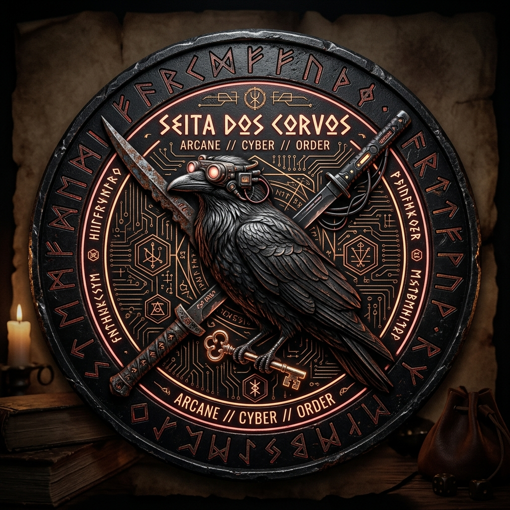

Seita dos Corvos
"Há sombras que não nascem da luz, mas da pura ausência dela. Nós não caçamos o absurdo; nós o orquestramos.
O Corvo observa. O Corvo julga. O Corvo age."
— Arquivos Fragmentados do Ninho
Nome
Catalogada nos registros restritos da Ordo Realitas sob a designação "Protocolo Corvino" ou "Arquitetos do Limiar". No submundo paranormal, conhecida simplesmente como Os Corvos, O Ninho ou A Orquestra do Véu.
O nome não deriva de idolatria cega à ave, mas sim do conceito dos corvos ancestrais nórdicos (Huginn e Muninn — Pensamento e Memória) aliados à biologia do Véu: criaturas capazes de transitar entre as camadas da realidade física e da escuridão do Outro Lado sem perturbar a harmonia cósmica.
Descrição
A Seita dos Corvos é uma força paramilitar clandestina que opera na fronteira limítrofe entre tecnologia de ponta, espiritualidade nórdica esotérica e engenharia interdimensional. Diferente de organizações que buscam erradicar o Outro Lado com fúria cega ou de cultos que almejam a dissolução da realidade pelo caos, a Seita opera sob uma diretriz estrita e inegociável: o equilíbrio absoluto entre planos.
"Para a Seita, uma anomalia paranormal desenfreada e uma cruzada genocida contra as entidades são forças igualmente destrutivas. Ambas rasgam o Véu. Ambas condenam o mundo."
Linha do Tempo Histórica
Xamãs-guerreiros nórdicos aprendem a suturar fendas naturais entre planos através de canções de garganta, runas e comunhão com os primeiros corvos espirituais.
Atuação silenciosa em templos, monastérios e bibliotecas antigas. Primeiros experimentos combinando carne humana e energias planares reguladas.
A Seita apaga-se da história convencional, atuando como conselheiros invisíveis de alquimistas e reis. Construção do lendário Espelho Negro.
Aceleração tecnológica forçada. Desenvolvimento dos primeiros exoesqueletos rituais, armamentos vivos e implantes com sangue estabilizado.
Redes digitais encriptadas, sensores de satélite mágico e a consolidação do Ninho sob o solo norueguês, liderados pela mente lúcida de Crow.
Informações Complementares

Emblema Heráldico — O Selo Rúnico Cibernético
O brasão não é apenas uma insígnia de identificação militar, mas um dispositivo de contenção simbólica desenhado para estabilizar frequências e dissipar ressonâncias anômalas.
- Estrutura Circular: Fundo em liga metálica escura com cuneiformes nórdicos em relevo na circunferência externa, funcionando como círculo de selamento.
- O Corvo Central: Em perfil, com plumagem hiperdetalhada unindo anatomia biológica e conexões nervosas.
- Visor Tático Duplo: Óculos de alta tecnologia com lentes luminescentes, simbolizando a capacidade de enxergar além do espectro humano.
- Circuitos & Alvo Rúnico: Trilhas de circuitos eletrônicos integradas ao peito do corvo, culminando em uma mira concêntrica ritual.
- Lâminas em "X": Uma katana de alta frequência com circuitos à esquerda e uma adaga ritual ancestral à direita, selando o juramento eterno de sigilo.
Ex-Viríssimo da Ordo Realitas. Mente fundida à matemática dimensional do Véu; corpo biologicamente estagnado nos 37 anos de idade.
Preto Ônix Profundo (Ocultação), Dourado Rúnico Antigo (Preservação/Conhecimento) e Vermelho Sangue Carmesim (Execução Cirúrgica).
• Círculo de Ossos: Combate e contenção.
• Círculo da Frequência: Acústica e rituais sonoros.
• Círculo do Olho Fechado: Inteligência e oráculos.
• Círculo do Véu: Cúpula estratégica.
• Códices: Tecnomancia e guerra digital.
Financiamento contínuo através da administração do Museu Viking, patentes biomecânicas secretas, cripto-ativos geridos por Proxy e extração de minerais de fendas planares.
Visão desprovida de dogma moral ou ódio religioso. O paranormal é um plano adjacente cuja física deve ser dominada, calculada e estabilizada cirurgicamente.
Complexo subterrâneo impenetrável sob o Museu Nacional de Arte Viking e Cultura Nórdica, situado no solo congelado de Oslo, Noruega.
Conclave seletivo e altamente especializado mundialmente, além de centenas de corvos espirituais sentinelas e a IA arcano-digital ÆON.
Fundamentos
Os Três Pilares da Seita
Agentes forjados nas mais severas técnicas de forças especiais, infiltração furtiva, tiro de precisão cirúrgico e combate com armaduras biomecânicas.
Exoesqueletos rituais, armamentos vivos de alta precisão, autômatos autônomos e a IA arcana ÆON analisando variações de frequência do Véu em tempo real.
Runas nórdicas milenares, rituais acústicos e artefatos de ressonância utilizados como chaves matemáticas para selar rupturas e conter entidades.
Os 6 Princípios Inegociáveis
A Seita não age pelo bem ou pelo mal, mas pela preservação do tecido da realidade a qualquer custo. Extremismos de qualquer natureza são neutralizados.
Agentes mantêm vidas civis reais e famílias. O anonimato em campo é absoluto: quando a missão termina, para o mundo humano nada aconteceu.
O Outro Lado é estudado e internalizado. Agentes atravessam temporariamente a membrana do Véu mantendo foco, frieza e lucidez técnica.
Música, escultura e poesia nórdica funcionam como estabilizadores cognitivos e emocionais. A beleza e a harmonia são a última trincheira contra a loucura.
A Seita atua nas sombras sem buscar glória ou aplausos. Decisões cirúrgicas são tomadas com frieza calculada antes que o mundo perceba o perigo iminente.
Composta por mentes brilhantes — pesquisadores, soldados, artífices e ocultistas. A humanidade de seus agentes é o que dá sentido real ao seu sacrifício.
Costumes
A palavra falada possui massa e perturba as frequências vibracionais do Véu. Em missão, comunicações táticas são executadas via rádio-neural ou gestos codificados. Falar alto em campo é considerado imperícia grave.
Toda a realidade é estruturada em vibrações. Agentes afinam instrumentos paranormais para distorcer a percepção de entidades, fechar fissuras e conceder sincronia de combate sem precedentes à equipe.
Após missões com alta exposição ao Outro Lado, os agentes passam por higienização mental assistida no Auditório do Silêncio para expurgar memórias parasitas e restaurar o equilíbrio da Sanidade.
Nenhum agente opera isolado. O corvo vinculado é tratado como parceiro e extensão da alma. Se a ave manifesta agitação ou recusa o voo, a missão é abortada imediatamente sem qualquer punição.
Objetivos
Cada operação da Seita dos Corvos enquadra-se rigorosamente em uma de suas seis diretrizes fundamentais de contenção e regulação existencial:
Contenção e sutura primária de fissuras no Véu através de combinações de acústica matemática, sangue rúnico e geometria sagrada.
Recuperação e quarentena de itens saturados por energia interplanar, transportados em cápsulas blindadas com ligas rúnicas.
Infiltração silenciosa em cultos extremistas para interrupção de cerimônias profanas e desmontagem simbólica de círculos ritualísticos.
Neutralização cirúrgica de criaturas que ameaçam o tecido dimensional, reconduzindo sua consciência para o plano adjacente de origem.
Recalibração do espaço-tempo em áreas afetadas por duplicatas, loops temporais ou memórias sem dono provocadas por falhas na membrana.
Dissolução absoluta de evidências com rituais de esquecimento e alteração sensorial. O mundo humano permanece em doce ignorância.
Relações
Organizações Oficiais
A Seita enxerga a Ordo como útil, porém ingênua e excessivamente idealista. Fornece pistas criptografadas e intervém quando agentes da Ordo cometem erros catastróficos. Contudo, se um agente da Ordo torna-se uma ameaça ao Véu, a Seita o neutraliza silenciosamente.
Ponto de Contato: Dai Verno (diplomata arcano).
Para os Leones, a Seita é folclore; para a Seita, os Leones são peças previsíveis em um tabuleiro tático. A Seita monitora suas células à distância, guiando seus conflitos para que sirvam como distração de ameaças maiores.
Ambas possuem profundo conhecimento oculto, mas objetivos antagônicos: o Obscurité busca o controle supremo; a Seita busca o equilíbrio irrestrito. Espionagem silenciosa e desaparecimentos mútuos marcam sua convivência tensa.
A Seita abomina a violência destrutiva e ruidosa dos Hellhunters, cujos confrontos estilhaçam as ressonâncias do Véu. O contato formal foi cortado após a Seita sabotar uma caçada desastrosa contra um Ente de Sangue.
Facções Paranormais
Ambas compreendem que desempenham lados opostos da mesma equação universal. Suas operações nunca colidem diretamente; observam-se à distância em absoluto silêncio cerimonial.
Considerados o caos personificado. A Seita ignora os jogos triviais, mas invade e implode arenas e estúdios quando as transmissões ameaçam provocar rupturas na membrana da realidade.
Territórios proibidos e intocáveis. A Seita não negocia nem invade; mantém sentinelas em cordões de isolamento impedindo que civis desavisados entrem nessas cidades fantasma.
Cultistas suicidas que forçam o colapso do Véu sofrem expurgo absoluto. A Seita elimina seus membros, incinera seus registros e apaga qualquer evidência de sua existência.
Dinâmica Interna
O Sistema Dual de Comando
Na Seita dos Corvos inexiste a vaidade ou disputas políticas internas. O funcionamento repousa sobre uma aliança perfeita entre duas estruturas complementares:
Determina quem avança, planeja as rotas de infiltração, puxa o gatilho e protege a retaguarda. Condicionamento físico e psicológico de nível máximo, disciplina absoluta e cumprimento estrito de ordens sem hesitação.
Determina quem enxerga através da névoa, quem manipula as frequências acústicas e quem toca a substância do Véu sem enlouquecer. Conduz os rituais de selamento e calibra os artefatos de ressonância.
A Tríade Operacional
"Nenhuma missão depende de um só olhar. Quando a Presença vacila, a Mente sustenta. Quando a Mente é ferida, a Escuta guia a retirada."
Resistência física, combate de choque com armaduras biomecânicas e barreira viva de proteção aos ritualistas (Círculo de Ossos).
Interpretação simbólica de padrões do Outro Lado, regência acústica, ativação de runas e selamento de anomalias (Círculo da Frequência).
Percepção ampliada, detecção de microfissuras dimensionais e comunicação psíquica através dos corvos sentinelas (Círculo do Olho Fechado).
Sede & Lar Doce Lar
Sob o permafrost da Noruega, disfarçado sob a fachada pública do Museu Nacional de Arte Viking e Cultura Nórdica, estende-se o complexo militar-arcano da Seita. Câmaras escavadas em 1930 revelaram blocos rúnicos milenares com geometria móvel. A Seita expandiu o local transformando-o em um colosso subterrâneo de laboratórios biomecânicos, oficinas de arte esotérica e o monumental Auditório do Silêncio — uma sala onde qualquer som físico é absorvido pelas paredes rúnicas, permitindo comunicação telepática pura.
LAR DOCE LAR: O NINHO DOS CORVOS
Agentes que utilizam o Ninho como base durante cenas de Interlúdio usufruem de duas vantagens permanentes concedidas pela estrutura singular da fortaleza:
Durante um Interlúdio realizado no Ninho, ao realizar a ação Descansar ou Relaxar, os membros da Seita recuperam o dobro dos Pontos de Sanidade normais. Além disso, uma vez por interlúdio, um agente pode submeter-se ao ritual do Retorno Vazio no Auditório do Silêncio, removendo imediatamente uma Perturbação Mental Temporária ou um efeito prolongado de trauma sem custo em recursos.
Os agentes têm acesso às oficinas biomecânicas do artífice Raed e aos bancos de dados de cálculo dimensional da IA ÆON. Ao realizar a ação Planejar Missão na sede, todos os agentes recebem +2d em testes de Ocultismo, Tecnologia ou Investigação durante a primeira cena da missão seguinte. Além disso, cada membro da Seita pode requisitar +1 item amaldiçoado ou modificação de exoesqueleto sem aumentar sua penalidade de Prestígio ou limite de Categoria.
Itens da Organização
BRAÇO DE SANGUE MODIFICADO
"Ele pulsa como um coração que nunca descansou. Cada gota que você derrama o alimenta — e ele sempre tem fome."
Tipo: Implante Biomecânico Arcano desenvolvido por Raed com tecnologia recuperada da Segunda Guerra Mundial e tecidos vivos saturados pelo Outro Lado.
Propriedades Passivas
- Golpe Brutal: +1d8 de dano de Sangue em ataques corpo a corpo.
- Rasgar a Carne: Seus ataques corpo a corpo ignoram RD 5 de Sangue de criaturas.
- Cicatrização Sombria: O braço regenera 2d4 PV por rodada fora de combate.
- Ancoragem Amaldiçoada: Imunidade à condição Desarmado (o braço é fundido à carne e aos ossos).
- Força Motriz: Como Ação Livre, você pode optar por usar seu valor de Força no lugar de Agilidade para calcular sua Defesa.
Durante a ativação, você ganha +2 em testes de Força, +1 ataque corpo a corpo adicional por rodada, +1d8 de dano de Sangue extra e imunidade a efeitos mentais e de dor.
Limitação (Fúria Cega): Você sofre -2 na Defesa e só pode atacar o alvo mais próximo; se não houver inimigos, deve atacar aliados adjacentes. Ao fim, role 1d6 e subtraia de todos os seus testes físicos até um descanso curto.
BATUTA RITUAL DO MAESTRO
Categoria I • Espaço 1Foco sinfônico em ébano e filamentos de prata do Véu. Permite conjurar rituais mantendo as mãos livres para regência. Em NEX 50%, desperta a afinidade elemental escolhida pelo portador:
- +1d em Ocultismo para rituais do mesmo elemento.
- Reduz em -1 PE (mínimo 1) o custo das habilidades da Trilha Maestro.
- Resistência elemental descritiva a dano do mesmo tipo.
EXOESQUELETO RÚNICO DE ASSALTO
Categoria II • Proteção PesadaArmadura militar biomecânica com pistões hidráulicos e selos do Outro Lado em metal frio.
- Defesa +5, Penalidade de Carga -2 (anulada em NEX 65%).
- Sem redução de deslocamento: seus servomotores rúnicos compensam o peso integral do metal.
- Garante RD 2 passiva contra corte, impacto e perfuração.
Os Instrumentos Paranormais da Orquestra Negra
Instrumentos amaldiçoados forjados com ossos interdimensionais, tendões rúnicos e ligas do Véu. Qualquer ocultista pode utilizá-los, porém apenas os Maestros do Medo conseguem atingir 100% de seu potencial harmônico:
Esculpida em osso de criatura do Outro Lado. Silencia mortos inquietos, revela rastros de almas invisíveis e expulsa espíritos possessores.
Metal de meteorito extradimensional. Golpes no ar liberam ondas de choque direcionais que repelem inimigos e quebram escudos de força.
Tambor metálico afinado em frequência áurea. Cada toque revela fraquezas estruturais, dissolve ilusões e expõe passagens secretas.
Cordas feitas com tendões de seres do limiar. Mantém aliados morrendo vivos além do limite e estabiliza colapsos biológicos imediatos.
Ressonância pungente que rasga a determinação do adversário, quebra foco de conjuração e dissolve memórias parasitárias.
Acordes graves que curvam a gravidade local e entortam projéteis balísticos disparados contra o músico.
Membros Notáveis
CROW, O ARQUITETO DAS SOMBRAS
Crow representa o ápice da fusão entre metodologia científica e compreensão cósmica do Véu. No passado, serviu na elite da Ordo Realitas criando câmaras de contenção e protocolos interdimensionais. Sua busca pela fórmula exata da realidade o conduziu a um experimento secreto de fusão consciente com o Véu.
Após dez anos desaparecido no Outro Lado, Crow retornou com idade biológica congelada aos 37 anos, lúcido e com uma mente friamente transcendida: a realidade curva-se discretamente ao seu redor. Rejeitado pelo comando da Ordo por suas teorias proibidas, assumiu a liderança da Seita ao selar sozinho uma quebra colossal na Escandinávia.
"O mundo não é uma guerra entre a luz e a escuridão. É uma máquina de engrenagens cósmicas. Se uma trava quebra, você não chora: você a substitui."
CROW COMO ALIADO
Aliado Mestre • Nível 4Quando um ataque ou evento for causar a morte ou colapso irreversível de um aliado, Crow intervém alterando a física do momento: anula 100% do dano do ataque ou fecha uma fenda dimensional instantaneamente. (Custo narrativo: um dos agentes perde permanentemente uma memória preciosa para equilibrar a troca).
Crow impõe as condições Lento e Pasmo a todas as criaturas e ameaças em alcance médio por 1 rodada inteira sem direito a teste de resistência, reescrevendo a ordem de iniciativa da cena.
LOBO – O EXECUTOR SILENCIOSO
Lobo já foi um atirador ocultista prodígio da Ordo Realitas. Durante uma missão classificada, teve contato direto com a Relíquia de Conhecimento, que estilhaçou sua identidade com memórias de séculos de vidas alheias. Capturado pela Seita das Máscaras, esteve prestes a ter sua alma dissolvida, até que foi arrancado pelo poder da Relíquia de Sangue em um ritual brutal.
Marcado por duas forças opostas que se anulam em seu peito, Lobo é um sobrevivente sem destino definido. Acolhido por Crow, tornou-se o carrasco supremo da Seita: quieto, letal, agindo como um glitch espacial que materializa o julgamento antes que a ameaça perceba sua aproximação.
LOBO COMO ALIADO
Aliado Algoz • Nível 4Lobo surge das sombras adjacente a uma criatura ameaçadora e desfere um disparo à queima-roupa com seu fuzil ritual: causa 8d10 de dano de Sangue e Balístico ignorando qualquer Redução de Dano (RD) física do alvo.
Quando um aliado for alvo de um ataque que o deixaria em estado Morrendo, Lobo intercepta o golpe disparando contra o membro agressor do inimigo, anulando o ataque e deixando a criatura Desarmada e Vulnerável até o próximo turno dela.
THE EYE – O ESTRATEGISTA
Antigo general e tático militar obcecado por controle absoluto. Para contornar a morte e servir indefinidamente, realizou 17 transferências de consciência sucessivas entre corpos hospedeiros. Na 18ª transferência, uma falha catastrófica em um ritual de estabilização o deixou aprisionado em um corpo cego e instável.
Resgatado pela Seita, Crow o ensinou a enxergar o mundo pela ressonância acústica do Véu. Hoje, The Eye comanda operações inteiras sem enxergar com os olhos biológicos: aliados são notas harmônicas, inimigos são ruídos e as batalhas são sinfonias mortais rigorosamente coreografadas.
THE EYE COMO ALIADO
Aliado Estrategista • Nível 4The Eye antecipa a cadência do combate: permite que até dois aliados realizem uma Ação de Movimento imediata e gratuita para reposicionamento sem provocar ataques de oportunidade.
Emite uma contrafrequência através dos comunicadores de campo que cancela a Presença Perturbadora de todas as criaturas na cena por 2 rodadas e interrompe instantaneamente a conjuração de qualquer ritual inimigo em andamento.
O fantasma digital do Ninho. Comunica-se em vozes sintetizadas em camadas, sabota satélites, corrompe transmissões de cultos e garante o anonimato absoluto da Seita apagando rastros mundiais em segundos.
Oráculo amaldiçoada. Ao adentrar qualquer ambiente, segredos e mistérios são expostos; porém, cada revelação apaga dias de suas próprias memórias pessoais, deixando-a com olhar distante e eterno pesar.
Existe na falha entre os segundos. Capaz de congelar frações de tempo para desarmar armadilhas apocalípticas, mas paga um pedágio brutal: seu corpo físico envelhece em espasmos rápidos a cada salto.
Artífice e cirurgião cibernético com próteses rituais em metade do corpo. Criador dos exoesqueletos, dos autômatos do Véu e do Braço de Sangue. Encara a dor corporal como uma engrenagem de sobrevivência.
Ex-mágico de palco carismático. O único diplomata com autorização para sentar à mesa com a Ordo, Leones e Obscurité, costurando alianças improváveis com um baralho na mão e palavras precisas.
Apenas 17 anos de idade. Seus disparos não seguem a balística comum: o garoto parece puxar o gatilho orientado pelo próprio Véu, acertando alvos atrás de coberturas intransponíveis.
Se Tornando um Membro
A Seita dos Corvos não realiza processos seletivos públicos nem aceita inscrições voluntárias vulgares. O Ninho escolhe seus membros. Quando um indivíduo demonstra sensibilidade nata para escutar as vibrações do Véu, ele é observado por semanas pelos corvos sentinelas. Se julgado digno, recebe um convite presencial. Um convite que jamais é recusado.
MECÂNICA ÚNICA: O VÍNCULO CORVINO
Ritual Proibido • Simbiose com o VéuAo se tornar um agente efetivo, você passa pelo Ritual do Vínculo, onde sua consciência é parcialmente conectada a um Corvo espiritual do Outro Lado. A ave não é um animal de estimação ou mascote; ela é um filtro de sanidade e uma sentinela do limiar.
Bônus: +5 em Furtividade e Camuflagem Paranormal.
Contrapartida: Presença social reduzida (difícil de ser lembrado por pessoas comuns).
Bônus: +5 em Percepção e Visão no Escuro Paranormal.
Contrapartida: Sono inquieto; recebe flashes de pesadelos do Outro Lado.
Bônus: +2 em Fortitude e +5 PV Máximos.
Contrapartida: -2 em iniciativas rápidas e reflexos instintivos.
Bônus: +1d em testes de Ocultismo para rituais.
Contrapartida: Emite pequenos estalos rúnicos involuntários em momentos de tensão.
Bônus: +2 na Margem de Ameaça contra alvos marcados.
Contrapartida: A ave fica impaciente e bica o agente em cenas de inação.
Habilidades Especiais do Vínculo
Avisa sobre ameaças invisíveis ou emboscadas iminentes. Você e todos os aliados em alcance curto ignoram as condições Desprevenido e Surpreendido na primeira rodada do combate.
Quando você ou um aliado adjacente for sofrer Dano Mental ou dano de Sanidade, você pode canalizar o golpe para o seu Corvo, absorvendo até 100% desse dano mental nos PVs espirituais da ave.
Permite realizar uma pergunta direta ao Mestre sobre o equilíbrio dimensional de um cenário, pista ou fraqueza de uma criatura, recebendo uma visão clarividente precisa.
TRILHA OCULTISTA: MAESTRO DO MEDO E DA REDENÇÃO
Suporte Tático, Buffs & Controle Acústico"O som é sua arma. O Véu é sua plateia. A realidade... sua partitura."
O Maestro do Medo canaliza as frequências primordiais do Véu. Onde outros veem terror incontrolável, o Maestro escuta notas e cadências harmônicas. Ele rege o campo de batalha convertendo o pânico em impulso para seus aliados ou destroçando a mente dos inimigos através de ressonâncias sonoras arcanas.
Ao atingir NEX 50% e adquirir Afinidade com um Elemento, sua Batuta Ritualística (Item de Categoria I, Espaço 1) desperta. Quando empunhada, você recebe +1d em testes de Ocultismo para rituais do mesmo elemento e reduz em -1 PE (mínimo de 1 PE) o custo de ativação de todos os poderes desta Trilha e de sua Subtrilha.
Você converte o medo em cadência tática. Um aliado em alcance curto recebe uma Ação de Movimento adicional no próximo turno dele (essencial para reposicionamentos ou fugas táticas). Alternativamente, você pode conceder a todos os aliados em alcance curto um bônus igual ao seu Intelecto em testes de resistência contra efeitos de Medo até o final da cena.
Em NEX 40%, o Maestro deve escolher entre seguir a Trilha Principal (Inspiração, Buffs & Purificação) ou especializar-se na Subtrilha Variante: Guardião das Notas (Debuffs, Atordoamento & Colapso Mental):
Foco na regência harmônica da equipe, acelerando ataques, elevando defesas e expurgando perturbações mentais.
Você inflama a precisão do grupo. Dois aliados em alcance curto recebem imediatamente +1d em testes de ataque e +2 na Margem de Ameaça para seus próximos ataques, tornando-se algozes perfeitos.
Pulso purificador da orquestra. Cancela no mesmo instante as condições Abalado, Apavorado, Enlouquecendo, Fascinado ou Pasmo de todos os aliados em alcance médio, restaurando a lucidez sob o fogo cruzado.
A sinfonia do fim do mundo. Enquanto sustentar a música (Ação de Movimento por rodada), todos os aliados em alcance médio ganham Imunidade a Medo, +5 na Defesa e uma Ação de Movimento adicional em todos os seus turnos.
"Se a trilha principal inspira, a subtrilha destrói." Converte as frequências sonoras em puro sofrimento acústico e desorientação para as ameaças do Outro Lado.
Um alvo escolhido em alcance médio sofre um choque auditivo violento. Ele deve realizar um teste de Vontade (DT Ocultismo). Se falhar, mergulha em vertigem absoluta, ficando Fraco e Lento até o final do seu próximo turno.
Onda sônica ensurdecedora contra até 3 criaturas em alcance médio. Cada alvo deve fazer um teste de Vontade (DT Ocultismo); os que falharem adquirem a temível condição Pasmo (incapazes de realizar ações padrão) pela próxima rodada inteira.
Você entoa a nota final do universo. Todas as criaturas inimigas no campo de batalha devem fazer um teste de Vontade. Quem falhar enlouquece imediatamente (atacando aliados ou o nada) e sofre 10d10 de Dano Mental letal. Quem passar sofre metade do dano e fica Pasmo por 1 rodada.
TRILHA COMBATENTE: ASSALTO — O COLOSSO DOS CORVOS
Linha de Frente, Blindagem Rúnica & Artilharia"Somente na morte o nosso dever termina. Quando a carne falha, o metal herda a guerra."
Uma fusão entre a brutalidade dos super-soldados de cerco e a blindagem regenerativa de alta tecnologia. O Colosso veste um Exoesqueleto-Sarcófago de carapaça rúnica impenetrável que absorve choques catastróficos e esmaga o inimigo com servomotores rituais.
Você veste o seu Exoesqueleto Rúnico (Proteção Pesada especial: Defesa +5, Penalidade -2, sem perda de deslocamento) com RD 2 física passiva contra corte, impacto e perfuração.
• Escudo de Força Arcano: No início de cada cena, você ganha PV Temporários iguais a 10 + seu Vigor. Se o escudo quebrar (chegar a 0 PV temporário), você pode gastar 2 PE e uma Ação de Movimento para reiniciar os reatores e restaurá-lo integralmente (1x por rodada).
Em NEX 40%, o Colosso escolhe entre a Trilha Principal: O Motor de Cerco (Tanque de Guerra, RD Absurda & Investidas) ou a Subtrilha Variante: O Olho dos Corvos (Precisão Cirúrgica, Sensores & Artilharia):
Foco em esmagamento corpo a corpo, interceptação de dano aliado e sobrevivência extrema até as últimas consequências.
Ataques corpo a corpo causam +1d8 de dano extra de Sangue/Impacto. Em Investida, o impacto no solo estilhaça o terreno e dobra esse bônus (+2d8). Ao reduzir uma criatura a 0 PV, você recupera PVs temporários iguais ao seu Vigor. Ganha proficiência com Espadas Pesadas Serrilhadas (Chainswords).
Penalidade da armadura cai para 0 e a RD física passiva aumenta para 5 contra todos os tipos de dano. Como Reação, gasta 2 PE para ganhar +5 RD contra um ataque, ou 3 PE para ativar a "Blindagem de Adamantium", saltando na frente de um aliado em alcance curto para interceptar o ataque com +10 RD.
Sua RD física natural torna-se 10 e você é imune a Agarrado e Lento. Se você for reduzido a 0 PV e fosse morrer, os circuitos assumem o seu sistema nervoso: você ignora Morrendo e continua lutando por 3 rodadas completas com imunidade total a todos os danos e condições paranormais. Ao fim da 3ª rodada, o sarcófago desliga.
Plataforma de execução tática. Troca a absorção bruta por sensores rituais do Véu, precisão cirúrgica de tiro e marcação de alvos para aniquilação.
Seu capacete ganha sensores do Véu: garante +5 em Percepção, +5 em Iniciativa e ignora Camuflagem Leve. Gastando 2 PE antes de atacar à distância, você dobra a Margem de Ameaça do ataque e ignora até 10 pontos da RD passiva do alvo.
O Olho pinta o alvo para a morte. Gastando 3 PE, você marca uma criatura até o fim da cena: seus ataques contra ela causam +2d8 de dano extra e você soma seu valor em Percepção diretamente nas rolagens de dano. Pode gastar Reação para conceder bônus de Defesa e leitura de flancos a aliados adjacentes.
Você sincroniza os sensores da armadura com a fenda do Véu. O próximo disparo à distância tem acerto automático garantido, ignorando completamente qualquer Defesa e RD da criatura. O dano final da arma é multiplicado por 5, e o alvo deve passar em Fortitude extrema ou é instantaneamente desintegrado.
TRILHA ESPECIALISTA: ENGENHEIRO DO VÉU
Construtor de Autômatos, Drones & Controle Remoto"Nenhum sangue precisa ser derramado se a máquina puder sangrar no seu lugar."
A apoteose da mecatrônica mística e da robótica arcana. O Engenheiro espalha drones e construtos mecânicos pelo mapa, controlando-os com frações de intelecto. Eles deixam de ser meras ferramentas e passam a atuar como parceiros letais de campo.
Você implanta em campo uma Sonda Batedora voadora (Tamanho Minúsculo, Deslocamento 9m, Defesa 15, PV igual a 3x seu NEX). Com uma Ação de Movimento, você enxerga pelos sensores dela, recebendo +5 de bônus passivo em Investigação e Percepção e podendo rolar testes como se estivesse na posição exata da sonda.
Em NEX 40%, o Engenheiro escolhe entre a Trilha Principal: O Fabricante de Suporte (Paramédicos Rúnicos & Construto do Fim) ou a Subtrilha Variante: Engenheiro de Assalto (Drones Agressivos, Artilharia & Protocolo Titã):
Foco em cura tática, cobertura blindada no mapa, aprisionamento mecânico de alvos e o colossal Gólem Ômega.
Você fabrica uma Unidade de Suporte Paramédica (Tamanho Pequeno, Defesa 18). Gastando 2 PE e Ação de Movimento para comandá-la, ela injeta estabilizadores num aliado adjacente, recuperando 2d8 + Intelecto PV (limite de 1 uso por aliado por cena).
Seus robôs ganham uma Ação de Movimento livre própria por rodada. Gastando 3 PE, você ordena Supressão Total: o autômato avança e realiza a manobra Agarrar com Lacres Metálicos (usando Intelecto no lugar de Força). Se vencer, impõe a condição Imóvel.
Surge no mapa o Gólem Ômega (Tamanho Grande, Defesa 25, PV 4x seu NEX, concedendo Cobertura Total). A carcaça abre e dispara o Canhão de Frequência do Véu: cone arrasador causando 20d10 de dano misto de Energia e Conhecimento (Fortitude DT Intelecto reduz à metade).
O caminho das armas autônomas agressivas. Seus drones deixam de ser ferramentas de apoio e tornam-se máquinas de retaliação e aniquilação visceral.
Em vez de cura, você fabrica Máquinas de Dano Brutal. Com 2 PE e Ação de Movimento, o autômato avança e desfere um golpe corpo a corpo (rola Luta usando o seu bônus de Intelecto no lugar de Força), causando 2d8 + Intelecto de dano de Impacto ou Corte.
Todos os seus construtos recebem +2 de bônus passivo em testes de ataque. Gastando 3 PE e uma Ação Padrão, seu drone dispara uma salva de micro-mísseis rúnicos em Área (cone de 6m ou linha de 9m) causando 6d8 de dano de impacto e fogo (Reflexos reduz à metade).
Seu Gólem de combate se torna um titã de esmagamento contínuo com 4 braços mecânico-rituais. Ele avança e desfere 4 ataques consecutivos e avassaladores (cada um causando 5d10 de dano). A cada acerto consecutivo no mesmo alvo, o próximo ataque ganha +1 no multiplicador de Crítico!
ORIGEM EXCLUSIVA: MARCADO PELOS CORVOS
Origem de Personagem • Suplemento de Organizações"Desde cedo, algo observava você nos lugares onde ninguém mais olhava — no topo dos postes sob tempestades, nas janelas escurecidas, no reflexo das poças de chuva. Um olhar paciente, calculista e antigo. Você não encontrou os Corvos. Foram eles que encontraram você."
Sua mente foi calibrada na infância para compreender símbolos arcanos proibidos e expressar estabilização emocional através da música ou escultura.
Uma vez por cena, ao conjurar qualquer versão Aprimorada de um ritual conhecido, você pode optar por não pagar nada do custo em PE. Ao invés disso, o ritual é canalizado diretamente através do tecido da sua vitalidade: você sofre o custo diretamente em Dano de PV (1d4 PV por círculo do ritual), preservando seus pontos de esforço para continuar no combate.